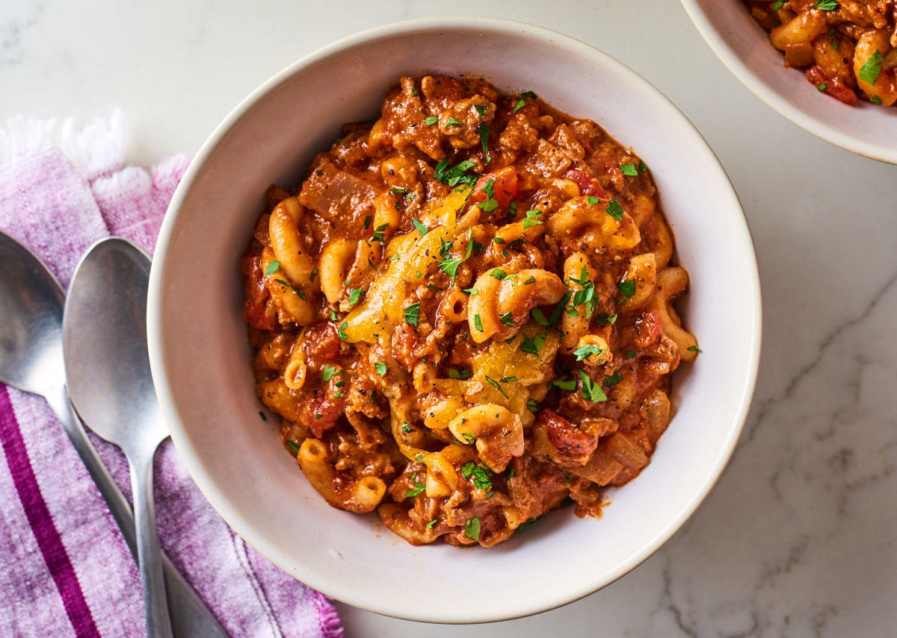

Goulash

Description
This is a recipe for the American variant of goulash, full of ground beef, tomato
sauce, and cheese. If you are looking for the Hungarian goulash, full of vegetables
and paprika filled broth look elsewhere. This variant is full of tomato sauce and
cheese, as well as pasta.
Ingredients
- 1 Onion
- 2 garlic cloves
- 1 Tbsp Olive Oil
- 1 lb ground beef
- 1 tsp kosher salt
- 1/2 tsp groud black pepper
- 1 Tbsp tomato past
- 1 can diced tomatoes
- 1 can tomato sauce
- 1 Tbsp Worcestershire sauce
- 1-2 cups low sodium chicken broth
- 2 bay leaves
- 1/4 tsp each of rosemary, basil, oregano, and thyme
- 1 cup of dried pasta (elbows, cavatapi, rigatoni, etc.)
- 4 ounces sharp cheddar cheese, shredded (plus more for topping)
Directions
- Dice the onion and mince the garlic cloves
- Heat the olive oil over medium-high heat in a large, heavy-bottom pot.
Add the onion and cook,stirring occasionaly, for around 4 minutes. Add
the garlic and cook for 1 minute more.
- Add the ground beef and season with salt and pepper. Break into smaller
pieces as it cooks. Cook until browned and beginning to crisp, around 6
minutes.
- Add the tomato paste and cook, stirring a few times, for 1 minute. Stir
in the cans of tomato sauce and diced tomatoes, the chicken broth, the
Worcestershire sauce, the herbs and 2 bay leaves. Bring to a boil.
- Stir in the pasta and reduce the heat to medium-low and simmer, uncovered,
stirring occasionally to prevent sticking, until the pasta is tender, around
15-18 minutes. Shred the cheese during this step.
- Remove the pot from the heat and discard bay leaves. Stir in the shredded cheese
until well incorporated. Top with more cheese for serving, if desired.